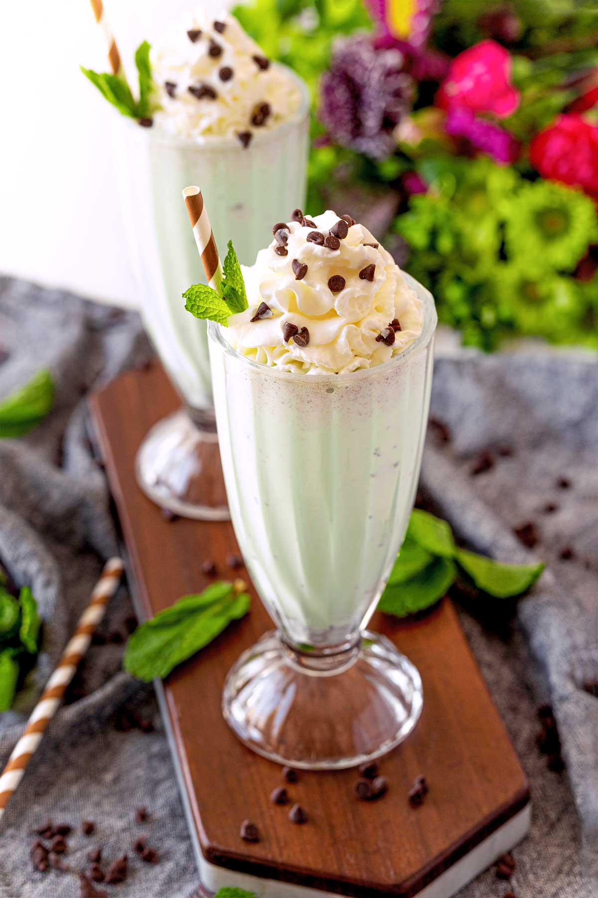

How to Make Chocolate Mint Milkshake

A cool, refreshing mint milkshake that will have you craving for more. All you need is milk, vanilla ice cream, chocolate syrup, and a few drops of peppermint extract.
- 4 scoops vanilla ice cream
- 1/2 cup milk
- 1/4 cup chocolate syrup
- 1 drop peppermint extract
- Combine ice cream, milk, chocolate syrup, and peppermint extract in a blender; blend until smooth.
- Pour into 2 glasses and serve.